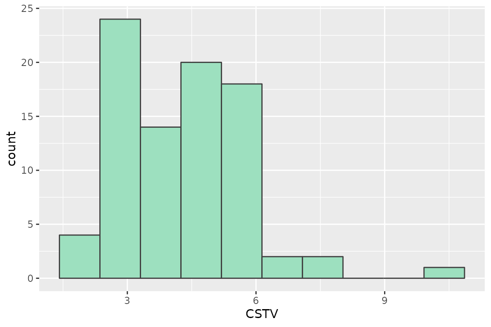
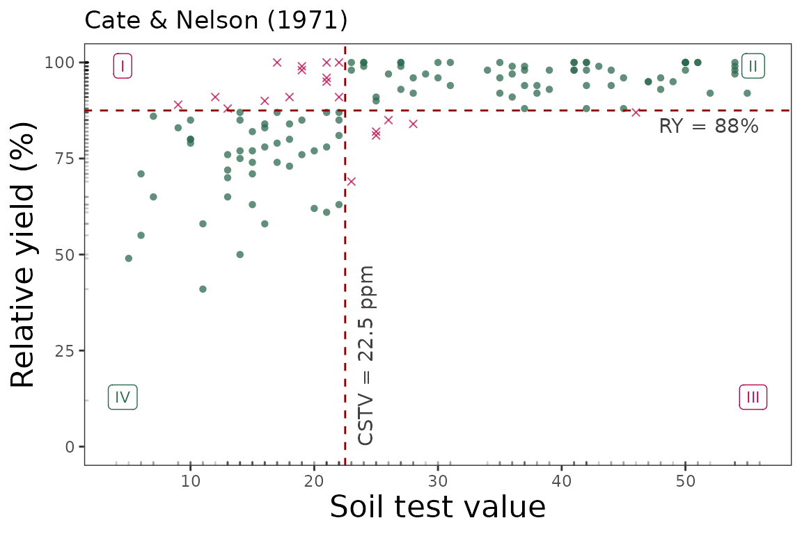

Cate and Nelson (1971)
Adrian Correndo
cate_nelson_1971_tutorial.Rmd
Description
The soiltestcorr-package also allows users to implement the quadrants analysis approach, also known as the Cate-Nelson analysis. This tutorial is intended to show how to deploy the cate_nelson_1971() function for estimating critical soil test values based on Cate and Nelson (1971). This approach is also known as the “statistical” version of the Cate-Nelson analysis. The first step of this alternative version is to estimate the CSTV (x-axis) as the minimum stv that minimizes the residual sum of squares when dividing data points in two classes (lower or greater than the CSTV) without using an arbitrary ry value. This refined version does not constrains the model performance (measured with the coefficient of determination -R2-) but the user has no control on the ry level for the CSTV estimation.
General Instructions
Load your dataframe with soil test value (stv) and relative yield (ry) data.
Specify the following arguments into the function -cate_nelson_1971()-:
(a). data (optional),
(b). stv (soil test value) and ry (relative yield) columns or vectors,
(c). plot TRUE (produces a ggplot as main output) or FALSE (DEFAULT -no plot-, only produces a list or data.frame),
(d). tidy TRUE (produces a data.frame with results) or FALSE (store results as list),
Run and check results.
Adjust plot as desired.
Tutorial
Suggested packages
# Install if needed
library(ggplot2) # Plots
library(dplyr) # Data wrangling
library(tidyr) # Data wrangling
library(utils) # Data wrangling
library(data.table) # Mapping
library(purrr) # MappingThis is a basic example using three different datasets:
Load datasets
# Example 1 dataset
# Fake dataset manually created
data_1 <- data.frame("RY" = c(65,80,85,88,90,94,93,96,97,95,98,100,99,99,100),
"STV" = c(1,2,3,4,5,6,7,8,9,10,11,12,13,14,15))
# Example 2. Native fake dataset from soiltestcorr package
data_2 <- soiltestcorr::data_test
# Example 3. Native dataset from soiltestcorr package, Freitas et al. (1966), used by Cate & Nelson (1971)
data_3 <- soiltestcorr::freitas1966Fit cate_nelson_1971()
1. Individual fits
RY target = 90%, replace with your desired value
1.1. tidy = FALSE
It returns a LIST (more efficient for multiple fits at once)
# Using dataframe argument, tidy = FALSE -> return a LIST
fit_1_tidy_false <-
soiltestcorr::cate_nelson_1971(data = data_1,
ry = RY,
stv = STV,
tidy = FALSE)
#> Warning in stats::chisq.test(data.frame(row.1, row.2)): Chi-squared
#> approximation may be incorrect
utils::head(fit_1_tidy_false)
#> $n
#> [1] 15
#>
#> $CRYV
#> [1] 86.5
#>
#> $CSTV
#> [1] 3.5
#>
#> $quadrants
#> q.I q.II q.III q.IV positive negative
#> 1 0 12 0 3 15 0
#>
#> $X2
#>
#> Pearson's Chi-squared test with Yates' continuity correction
#>
#> data: data.frame(row.1, row.2)
#> X-squared = 9.401, df = 1, p-value = 0.002169
#>
#>
#> $anova
#> Analysis of Variance Table
#>
#> Response: y
#> Df Sum Sq Mean Sq F value Pr(>F)
#> xgroup 1 874.02 874.02 29.519 0.0001145 ***
#> Residuals 13 384.92 29.61
#> ---
#> Signif. codes: 0 '***' 0.001 '**' 0.01 '*' 0.05 '.' 0.1 ' ' 11.2. tidy = TRUE
It returns a data.frame (more organized results)
# Using dataframe argument, tidy = FALSE -> return a LIST
fit_1_tidy_false <-
soiltestcorr::cate_nelson_1971(data = data_1,
ry = RY,
stv = STV,
tidy = TRUE)
#> Warning in stats::chisq.test(data.frame(row.1, row.2)): Chi-squared
#> approximation may be incorrect
utils::head(fit_1_tidy_false)
#> n CRYV CSTV quadrants.q.I quadrants.q.II quadrants.q.III quadrants.q.IV
#> 1 15 86.5 3.5 0 12 0 3
#> quadrants.positive quadrants.negative R2
#> 1 15 0 0.69425171.3. Alternative using the vectors
You can call stv and ry vectors using the $.
The tidy argument still applies for controlling the output type
fit_1_vectors_list <-
soiltestcorr::cate_nelson_1971(ry = data_1$RY,
stv = data_1$STV,
tidy = FALSE)
#> Warning in stats::chisq.test(data.frame(row.1, row.2)): Chi-squared
#> approximation may be incorrect
fit_1_vectors_tidy <-
soiltestcorr::cate_nelson_1971(ry = data_1$RY,
stv = data_1$STV,
tidy = TRUE)
#> Warning in stats::chisq.test(data.frame(row.1, row.2)): Chi-squared
#> approximation may be incorrect1.4. Data 2. Test dataset
fit_2 <-
soiltestcorr::cate_nelson_1971(data = data_2,
ry = RY,
stv = STV,
tidy = TRUE)
utils::head(fit_2)
#> n CRYV CSTV quadrants.q.I quadrants.q.II quadrants.q.III quadrants.q.IV
#> 1 137 87.5 22.5 13 70 6 48
#> quadrants.positive quadrants.negative R2
#> 1 118 19 0.39368241.5. Data 3. Freitas et al. 1966
fit_3 <-
soiltestcorr::cate_nelson_1971(data = data_3,
ry = RY,
stv = STK,
tidy = TRUE)
#> Warning in stats::chisq.test(data.frame(row.1, row.2)): Chi-squared
#> approximation may be incorrect
utils::head(fit_3)
#> n CRYV CSTV quadrants.q.I quadrants.q.II quadrants.q.III quadrants.q.IV
#> 1 24 82.4 46.5 0 15 1 8
#> quadrants.positive quadrants.negative R2
#> 1 23 1 0.70665362. Multiple fits at once
2.1. Using map
Fit
# Run multiple examples at once with map()
fit_multiple_map <- data.all %>%
dplyr::mutate(mod_alcc = purrr::map(data,
~ soiltestcorr::cate_nelson_1971(ry = .$RY,
stv = .$STV,
tidy = TRUE)))
#> Warning in stats::chisq.test(data.frame(row.1, row.2)): Chi-squared
#> approximation may be incorrect
#> Warning in stats::chisq.test(data.frame(row.1, row.2)): Chi-squared
#> approximation may be incorrect
utils::head(fit_multiple_map)
#> # A tibble: 3 × 3
#> id data mod_alcc
#> <chr> <list> <list>
#> 1 1 <tibble [15 × 2]> <df [1 × 10]>
#> 2 2 <tibble [137 × 2]> <df [1 × 10]>
#> 3 3 <tibble [24 × 2]> <df [1 × 10]>2.1. Using group_map
Alternatively, with group_map, we do not require nested data.
However, it requires to dplyr::bind_rows and add an id column specifying the name of each dataset.
This option return models as lists objects.
fit_multiple_group_map <-
data.all %>% tidyr::unnest(data) %>%
#dplyr::bind_rows(data_1, data_2, .id = "id") %>%
dplyr::group_by(id) %>%
dplyr::group_map(~ soiltestcorr::cate_nelson_1971(data = .,
ry = RY,
stv = STV,
tidy = TRUE))
#> Warning in stats::chisq.test(data.frame(row.1, row.2)): Chi-squared
#> approximation may be incorrect
#> Warning in stats::chisq.test(data.frame(row.1, row.2)): Chi-squared
#> approximation may be incorrect
utils::head(fit_multiple_group_map)
#> [[1]]
#> n CRYV CSTV quadrants.q.I quadrants.q.II quadrants.q.III quadrants.q.IV
#> 1 15 86.5 3.5 0 12 0 3
#> quadrants.positive quadrants.negative R2
#> 1 15 0 0.6942517
#>
#> [[2]]
#> n CRYV CSTV quadrants.q.I quadrants.q.II quadrants.q.III quadrants.q.IV
#> 1 137 87.5 22.5 13 70 6 48
#> quadrants.positive quadrants.negative R2
#> 1 118 19 0.3936824
#>
#> [[3]]
#> n CRYV CSTV quadrants.q.I quadrants.q.II quadrants.q.III quadrants.q.IV
#> 1 24 82.4 46.5 0 15 1 8
#> quadrants.positive quadrants.negative R2
#> 1 23 1 0.70665363. Plots
3.1. Calibration Curve
We can generate a ggplot with the same mod_alcc() function.
We just need to specify the argument plot = TRUE.
soiltestcorr::cate_nelson_1971(data = data_1,
ry = RY,
stv = STV,
plot = TRUE)
soiltestcorr::cate_nelson_1971(data = data_2,
ry = RY,
stv = STV,
plot = TRUE)
soiltestcorr::cate_nelson_1971(data = data_3,
ry = RY,
stv = STK,
plot = TRUE)
References
Cate, R.B. Jr., and Nelson, L.A., 1971. A simple statistical procedure for partitioning soil test correlation data into two classes. Soil Sci. Soc. Am. Proc. 35:658-659